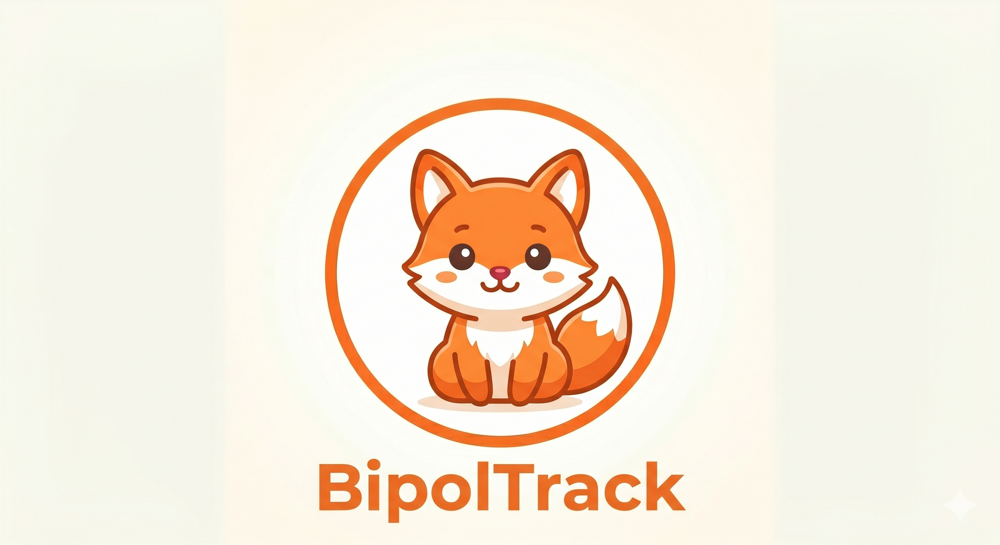

Exportez vos données pour les sauvegarder ou les analyser dans un tableur.
Le fichier JSON sert à la sauvegarde complète et à la restauration.
Le fichier CSV s'ouvre directement dans Google Sheets ou Excel.
Google Drive
Sauvegardez automatiquement dans votre Google Drive. L'app ne voit que ses propres sauvegardes,
jamais les autres fichiers de votre Drive. Consultez le guide pour obtenir un Client ID Google
(fichier GUIDE-GOOGLE-DRIVE.md à côté de cette page).
Non connecté
—
Synchronisation automatique
Quand cette option est activée, chaque modification (entrée du journal, traitement) est envoyée
automatiquement sur Google Drive. À l'ouverture de l'app, si la sauvegarde Drive est plus récente
qu'ici (autre appareil par exemple), l'app proposera de restaurer. Les 10 derniers snapshots
quotidiens sont conservés sur Drive.
À propos
BipolTrack · Vos données restent locales sur votre appareil.
Les sauvegardes Google Drive utilisent un accès limité (uniquement les fichiers créés par l'app).

Nouveau traitement
Importer des données
Sauvegarde plus récente disponible
La sauvegarde sur Google Drive est plus récente que les données de cet appareil.
Que veux-tu faire ?
Le fichier exporté par BipolTrack est un fichier JSON au format UTF-8.
Il contient l'ensemble de tes entrées de journal et la liste de tes traitements.
Tu peux l'éditer dans n'importe quel éditeur de texte
(VS Code, Bloc-notes, TextEdit en mode texte brut, etc.), puis le réimporter dans l'app
via Réglages → Importer un fichier JSON.
Identifiant de l'app, toujours "BipolTrack". Informatif uniquement.
versionopt
number
Version du format. Actuellement 1. Sera incrémentée si le format change.
exportDateopt
string ISO
Date de génération du fichier (ex: "2026-05-17T10:23:45.123Z"). Informatif.
lastModifiedopt
number (ms)
Timestamp de la dernière modification des données (millisecondes depuis 1970). Utilisé par la synchronisation pour savoir quelle version est la plus récente. Si tu rédiges un fichier à la main, mets Date.now() ou un grand nombre récent (ex: 1747400000000).
entriesrequis*
array
Tableau des entrées du journal (peut être vide []).
medsrequis*
array
Tableau des traitements (peut être vide []).
* Au moins un des deux (entries ou meds) doit être présent et être un tableau, sinon l'import est refusé.
Une entrée du journal — entries[i]
Une entrée représente une journée. Une seule entrée par date.
Champ
Type / format
Description
datereq
"AAAA-MM-JJ"
Date du jour. Format ISO court. Sert de clé d'unicité (1 entrée/jour).
moodreq
entier 1–10
Humeur générale du jour. 1 = très bas, 10 = très haut.
sleepreq
nombre (h)
Nombre d'heures dormies (décimales acceptées : 7.5).
anxietyreq
entier 1–10
Niveau d'anxiété. 1 = aucune, 10 = très forte.
medsopt
array de strings
Liste des id des traitements pris ce jour-là (cf. meds[i].id). Vide [] si aucun.
symptomsopt
array de strings
Symptômes ressentis. Valeurs reconnues : voir liste plus bas.
effectsopt
array de strings
Effets secondaires ressentis. Valeurs reconnues : voir liste plus bas.
noteopt
string
Note libre (commentaire personnel). Peut être vide "".
tsopt
number
Timestamp (millisecondes depuis 1970). Généré automatiquement par l'app, tu peux l'omettre lors d'une saisie manuelle.
Valeurs reconnues pour symptoms
Si tu utilises un code non listé ici, il sera conservé tel quel mais n'apparaîtra pas dans les statistiques pré-calculées. L'app utilise ces codes (en minuscules, sans accent, avec _) :
Identifiant. L'app utilise un timestamp en string ("1716200000000") mais tu peux mettre n'importe quelle chaîne (ex: "lithium-400"). Doit être unique dans meds[].
namereq
string
Nom du médicament (ex: "Lithium", "Dépakine").
doseopt
string
Dosage libre (ex: "400 mg", "2 cp").
freqopt
string
Fréquence de prise. Valeurs habituelles : voir liste plus bas.
startopt
"AAAA-MM-JJ"
Date de début du traitement.
notesopt
string
Notes libres (ex: "à prendre avec un repas").
activeopt
boolean
true si traitement en cours, false si arrêté. Défaut : true.
Valeurs habituelles pour freq
1x/jour2x/jour3x/jourmatinau couchermatin+soir
D'autres valeurs sont acceptées (texte libre), mais le menu déroulant de l'app ne les proposera pas.
1. Va dans Réglages → Exporter en JSON.
2. Ouvre le fichier .json dans un éditeur de texte (VS Code, TextEdit, Bloc-notes).
3. Modifie les valeurs voulues.
4. Sauvegarde, puis reviens dans Réglages → Importer un fichier JSON et choisis Remplacer.
Garde toujours une copie du fichier original avant de l'éditer, au cas où.
Saisir 30 entrées rétroactives à la main
Plus rapide que de cliquer 30 fois dans l'app. Pars du fichier
exemple téléchargeable (bouton ci-dessous), duplique le bloc
{ "date": ..., ... } autant de fois que nécessaire, et ajuste
les dates et valeurs. À l'import, choisis Fusionner pour ne pas écraser
d'éventuelles entrées déjà présentes.
Migrer depuis un tableur (Excel, Sheets)
Dans ton tableur, crée une colonne par champ (date, mood, sleep…).
Pour les listes (meds, symptoms, effects), utilise
une cellule avec les valeurs séparées par | puis transforme la feuille
en JSON via un outil en ligne (ex: csvjson.com) ou un petit script.
Enveloppe ensuite le tableau obtenu dans { "entries": [...], "meds": [...] }.
Corriger une entrée existante
Si tu importes une entrée avec une date déjà utilisée :
• Mode Remplacer → toutes les données existantes sont écrasées.
• Mode Fusionner → l'entrée existante est conservée, la nouvelle est ignorée.
Pour modifier une entrée précise sans toucher au reste, l'approche la plus sûre est :
export → édition → import en mode Remplacer.
Pièges courants
Doublons de date : deux entrées avec la même date dans entries[] provoqueront une perte de données (la première sera écrasée par la seconde au moment où l'app les chargera).
Référence aux traitements :entries[i].meds contient des id, pas des noms. Si un id n'existe pas dans meds[], le traitement n'apparaîtra pas dans l'historique (mais la donnée reste stockée).
Format JSON strict : pas de virgule après le dernier élément d'un tableau/objet, guillemets doubles uniquement (pas de simples), encodage UTF-8.
Sauvegarde avant import : avant un import en mode Remplacer, fais toujours un export JSON de tes données actuelles — c'est ta ceinture de sécurité.
Fichier exemple
Télécharge un fichier JSON prêt à éditer (3 entrées, 2 traitements) pour t'entraîner :